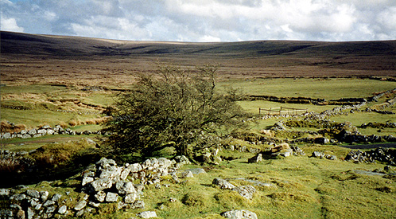

|
WHITEWORKS  Whiteworks is one of the most isolated places where Drake H3 run, lying in open moorland at the end of a single track road from Princetown. It was once a tin mining area, being named after the high grade 'white' tin which was produced after the ore was processed. Even though the tin mining industry in Devon died out many years ago, Plymouth's Union Street is still famous for its ores. Near to Whiteworks lies Foxtor Mire, which is said to be the most dangerous bog on Dartmoor. It was immortalised as the "Great Grimpen Mire" in Sir Arthur Conan Doyle's Sherlock Holmes story 'The Hound Of The Baskervilles'. This was where Holmes & Watson had their final fateful encounter with the Hound. (Drake H3 hares often have fateful encounters with hounds, but that's another story). A local farmer met a walker near Whiteworks and they got to talking. "Where be you agoing to?" asked the farmer. "Well, my next stop is Foxtor Mire" came the reply. The farmer looked shocked "Id'll do 'ee no good going there" he said, "that be the worst bloody bog in Debon" The walker looked sceptical. "Take moi word" said the farmer, "I pulled a bloke out of the deepest bit o' that bog last week, right up to his chin in it 'ee wuz" The walker looked mildly amused "How tall was he?" he asked. The farmer thought for a moment,"Well, 'ee wuz pretty short, 'ee coodn't ave been more than four foot eight" he replied. Greatly amused, the walker said "That doesn't sound like a very deep bog to me, but I bet he was glad to get out". "Yes" said the farmer "and so wuz the horse 'ee wuz sitting on".
|